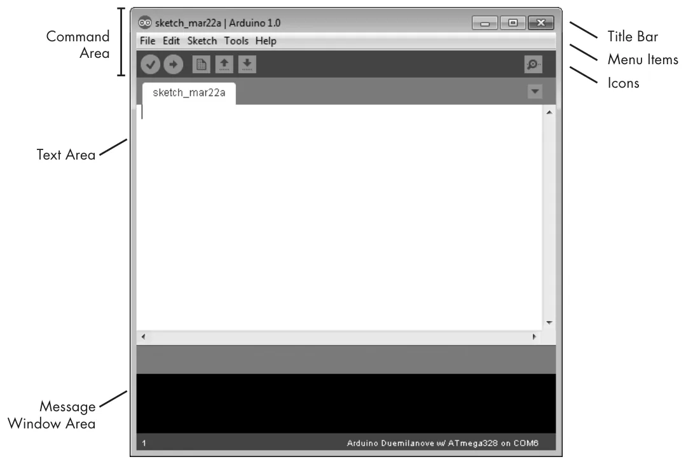

As shown in Figure 2-10, the Arduino IDE resembles a simple word processor. The IDE is divided into three main areas: the command area, the text area, and the message window area.

The Command Area
The command area is shown at the top of Figure 2-10 and includes the title bar, menu items, and icons. The title bar displays the sketch’s filename (sketch_mar22a), as well as the version of the IDE (Arduino 1.0). Below this is a series of menu items (File, Edit, Sketch, Tools, and Help) and icons, as described next.
Menu Items
As with any word processor or text editor, you can click one of the menu items to display its various options.
File Contains options to save, load, and print sketches; a thorough set of example sketches to open; as well as the Preferences submenu
Edit Contains the usual copy, paste, and search functions common to any word processor
Sketch Contains the function to verify your sketch before uploading to a board, and some sketch folder and import options
Tools Contains a variety of functions as well as the commands to select the Arduino board type and USB port
Help Contains links to various topics of interest and the version of the IDE
The Icons
Below the menu toolbar are six icons. Mouse over each icon to display its name. The icons, from left to right, are as follows:
Verify Click this to check that the Arduino sketch is valid and doesn’t contain any programming mistakes.
Upload Click this to verify and then upload your sketch to the Arduino board.
New Click this to open a new blank sketch in a new window.
Open Click this to open a saved sketch.
Save Click this to save the open sketch. If the sketch doesn’t have a name, you will be prompted to create one.
Serial Monitor Click this to open a new window for use in sending and receiving data between your Arduino and the IDE.
The Text Area
The text area is shown in the middle of Figure 2-10; this is where you’ll create your sketches. The name of the current sketch is displayed in the tab at the upper left of the text area. (The default name is the current date.) You’ll enter the contents of your sketch here as you would in any text editor.
The Message Window Area
The message window area is shown at the bottom of Figure 2-10. Messages from the IDE appear in the black area. The messages you see will vary and will include messages about verifying sketches, status updates, and so on.
At the bottom right of the message area, you should see the name of your Arduino board type as well as its connected USB port—Arduino Duemilanove w/ATmega328 on COM6 in this case.